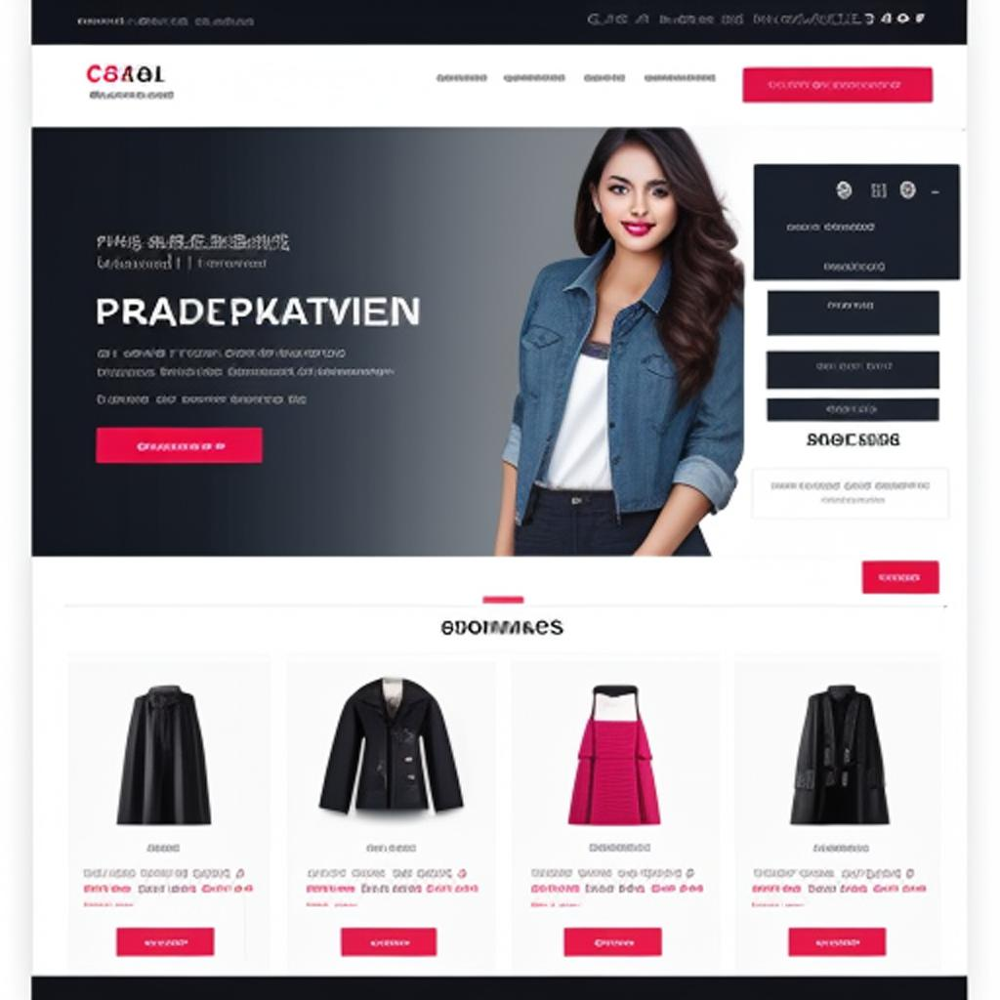
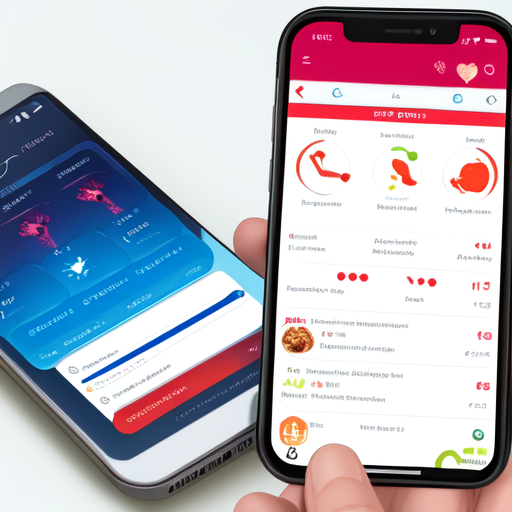

Proyectos
Proyecto 1: Sistema de Gestión de Biblioteca
Descripción: Desarrollo de un sistema de gestión de biblioteca para una institución educativa. El sistema permite registrar libros, administrar préstamos, y gestionar la base de datos de usuarios.

Proyecto 2: Plataforma E-Commerce
Descripción: Creación de una plataforma de comercio electrónico para una tienda de ropa. La plataforma incluye funcionalidades de catálogo de productos, carrito de compras y gestión de pedidos.
Proyecto 3: Aplicación Móvil de Salud
Descripción: Desarrollo de una aplicación móvil para promover hábitos saludables. La aplicación incluye funcionalidades de seguimiento de actividad física, registro de dieta y acceso a información médica.
Proyecto 4: Plataforma de Aprendizaje en Línea
Descripción: Diseño de una plataforma de aprendizaje en línea para cursos universitarios. La plataforma ofrece recursos educativos, evaluaciones en línea y seguimiento del progreso del estudiante.